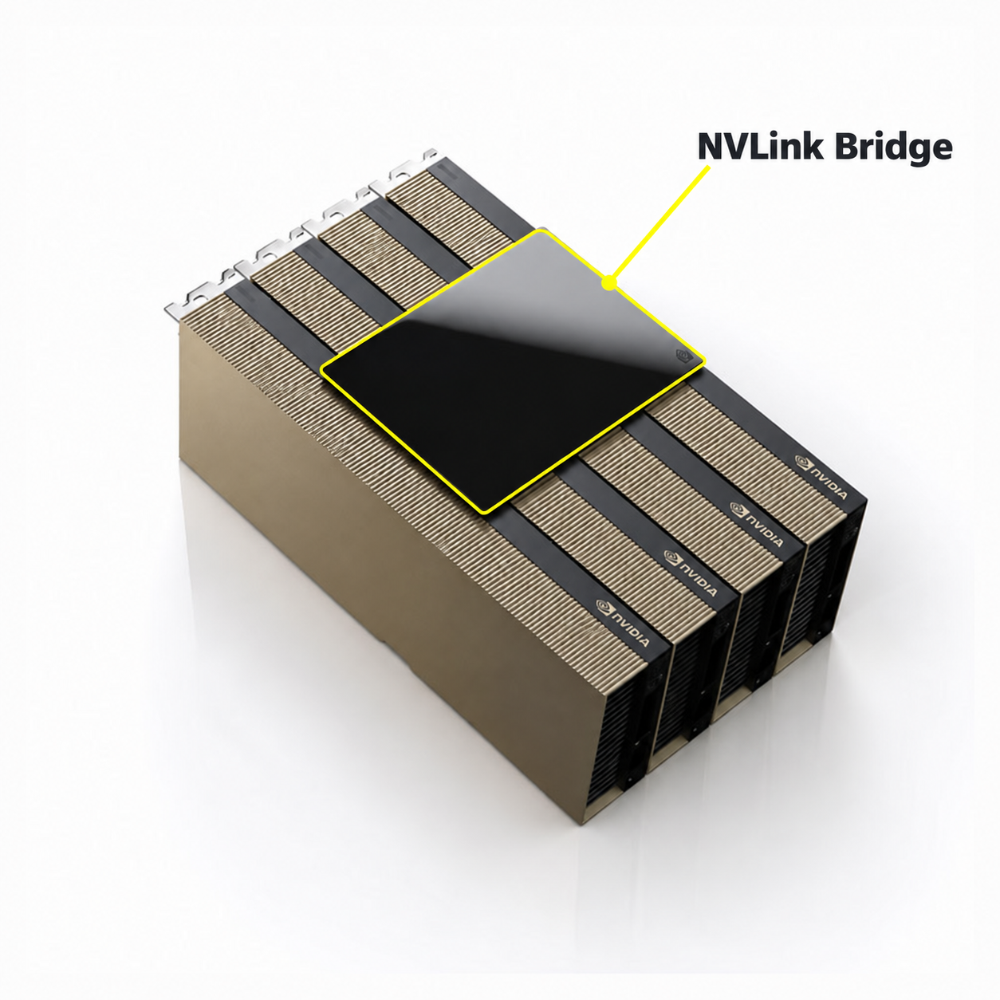
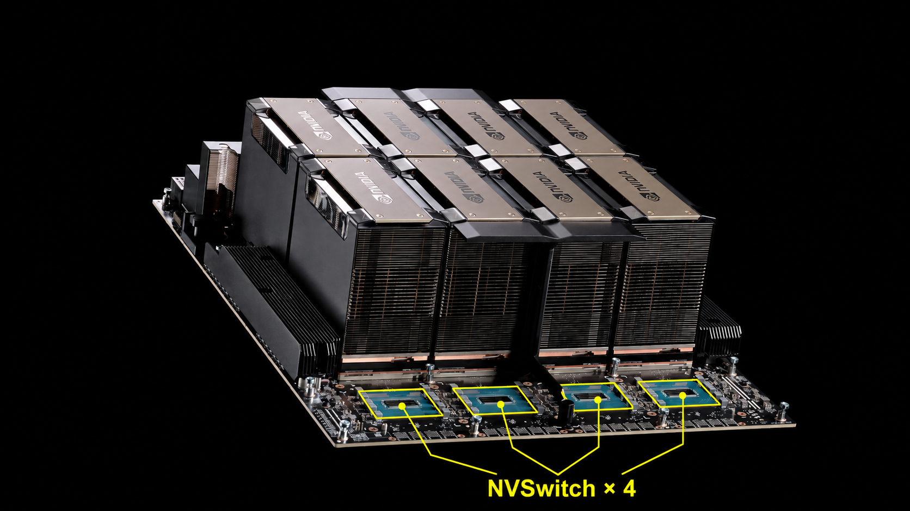

GPU 여러 장이 함께 계산하려면 한 GPU가 만든 결과를 다른 GPU로 전달해야 합니다. 각 GPU가 별도의 GPU 메모리를 가지고 있기 때문입니다.
이때 등장하는 SHM, P2P, PCIe, NVLink, NVSwitch는 모두 같은 종류의 용어가 아닙니다.
- SHM·P2P: 데이터를 어떤 방식으로 전달하는가?
- PCIe·NVLink: 데이터를 어떤 하드웨어 연결로 옮기는가?
- NVSwitch: 여러 NVLink 연결 사이에서 데이터를 전달하는 스위치
이 구분을 바탕으로, 같은 서버 안에서 GPU 사이의 데이터가 이동하는 구조를 살펴보겠습니다.
1. SHM: 서버의 DRAM을 중간 버퍼로 사용한다
SHM은 Shared Memory, 즉 공유 메모리의 약자입니다. SMH가 아니라 SHM입니다.
GPU 통신에서 NCCL의 SHM 전송 방식은 GPU끼리 직접 접근하는 대신, 호스트 메모리를 중간 전달 공간으로 사용합니다. 단순화하면 다음과 같습니다.
GPU 0 메모리 → 서버의 DRAM 버퍼 → GPU 1 메모리
GPU 0의 데이터를 서버 RAM에 옮겨 놓고, 그 데이터를 GPU 1로 전달하는 구조입니다. NCCL은 P2P 통신이 불가능할 때 사용할 수 있는 방식으로 SHM을 설명합니다. NCCL의 SHM 설명
여기서 흔히 말하는 “CPU 버퍼”는 CPU 내부의 SRAM 캐시가 아니라, CPU 쪽 시스템 메모리인 DRAM에 마련한 버퍼입니다.
따라서 다음 두 가지는 구분해야 합니다.
- 서버의 DRAM을 중간 저장 공간으로 사용한다.
- CPU 코어가 데이터를 하나씩 읽어서 다른 GPU로 복사한다.
첫 번째가 두 번째를 의미하지는 않습니다. 메모리를 경유하는 것과 CPU 코어가 직접 복사 작업을 수행하는 것은 별개의 문제입니다.
또한 SHM은 메모리 부품의 이름이 아닙니다. 호스트의 공유 메모리 영역을 이용하는 전송 방식을 가리킵니다.
2. P2P: 서버 DRAM에 중간 복사하지 않고 GPU끼리 전달한다
P2P는 Peer-to-Peer입니다. GPU 통신에서는 한 GPU가 다른 GPU의 메모리에 직접 접근하거나 데이터를 전달하는 방식을 뜻합니다.
SHM과 비교할 때 중요한 차이는 서버 DRAM에 데이터를 중간 복사하는 단계가 없다는 것입니다.
호스트 메모리 경유: GPU 0 메모리 → 서버 DRAM → GPU 1 메모리
P2P: GPU 0 메모리 → GPU 간 연결 → GPU 1 메모리
CUDA도 P2P 접근을 활성화하면 GPU 사이의 메모리 복사를 호스트에 중간 저장할 필요가 없다고 설명합니다. 다만 실제 P2P 지원 여부는 GPU와 시스템 연결 구조 등에 따라 달라집니다. CUDA의 GPU 간 P2P 설명
“직접”은 중간 하드웨어가 없다는 뜻이 아니다
P2P라고 해서 GPU 두 장이 반드시 케이블 하나로만 연결돼 있어야 하는 것은 아닙니다.
데이터가 PCIe 스위치나 CPU 쪽 PCIe 연결 장치를 통과하더라도, 서버 DRAM을 중간 버퍼로 사용하지 않는 P2P가 가능합니다. NCCL도 P2P 경로로 PCIe 스위치, CPU 쪽 연결, NUMA 영역 간 연결 등을 구분합니다. NCCL의 P2P 경로 설명
따라서 “P2P는 CPU를 안 거친다”는 표현은 조금 더 정확하게 풀어야 합니다.
CPU가 전송을 준비하거나 명령을 내릴 수는 있지만, 전송 데이터를 CPU 코어와 SRAM 캐시에 넣었다가 다시 꺼내 보내야 하는 것은 아닙니다. CPU 쪽 연결 하드웨어를 통과하는 것과 CPU가 데이터를 직접 처리하는 것은 다릅니다.
3. PCIe: GPU를 포함한 여러 장치를 연결하는 범용 연결 기술
PCIe는 PCI Express의 약자입니다. GPU뿐 아니라 네트워크 카드와 SSD 등 여러 장치를 시스템에 연결하는 데 사용하는 표준입니다.
PCIe는 단순히 “그래픽카드를 꽂는 슬롯의 모양”만을 뜻하지 않습니다. 장치 사이에서 데이터를 전송하는 규칙과 전기적 연결도 포함합니다. 여러 개의 전송 레인으로 연결 폭을 구성하며, x16 같은 표기가 그 레인 수를 나타냅니다. PCI-SIG의 PCIe 설명
GPU 두 장이 PCIe에 연결돼 있다면, 지원되는 환경에서는 이 PCIe 연결을 통해 GPU끼리 P2P 통신을 할 수 있습니다.
예를 들어 같은 PCIe 스위치에 연결된 GPU라면 다음과 같은 경로를 사용할 수 있습니다.
GPU 0 → PCIe 스위치 → GPU 1
이때 서버 DRAM에 중간 복사하지 않는다면 PCIe를 사용하는 P2P입니다.
반대로 PCIe GPU가 서버 DRAM을 버퍼로 이용해 데이터를 전달할 수도 있습니다.
즉, PCIe라는 사실만으로 P2P인지, 호스트 메모리 경유인지가 결정되지는 않습니다. PCIe는 연결 기술이고, P2P와 SHM은 그 연결 위에서 데이터를 전달하는 방식이기 때문입니다. NCCL의 P2P·SHM 구분
4. NVLink: PCIe와 별도로 마련된 고속 연결이다
NVLink는 NVIDIA의 고속 인터커넥트 기술입니다. 여기서는 지원 GPU 사이에서 많은 데이터를 주고받기 위한 연결로 이해하면 됩니다.
NVLink를 이용해 GPU끼리 직접 데이터를 전달할 수 있지만, P2P와 NVLink가 같은 말은 아닙니다.
- PCIe를 이용하는 P2P가 있습니다.
- NVLink를 이용하는 P2P도 있습니다.
NVLink는 P2P를 구현할 수 있는 하드웨어 연결 중 하나입니다.
PCIe 슬롯에 꽂힌 GPU가 어떻게 NVLink도 사용할까?
PCIe 카드 형태의 GPU 중에는 PCIe 단자와 별도의 NVLink 단자를 모두 가진 제품이 있습니다.
이런 GPU는 두 연결을 함께 사용합니다.
- PCIe 단자로 서버에 연결됩니다.
- 별도의 NVLink 단자로 다른 GPU와 연결됩니다.
따라서 GPU가 PCIe 슬롯에 꽂혀 있다고 해서, 그 GPU의 모든 통신이 반드시 PCIe로만 이루어지는 것은 아닙니다.
실제 A100 PCIe 제품에는 카드 위쪽 가장자리에 별도의 NVLink 연결부가 있고, 여기에 브리지를 장착해 다른 A100과 연결합니다. NVIDIA A100 PCIe 제품 설명서

사용자 제공 이미지에 NVLink 브리지 위치를 표시한 편집 이미지입니다. 노란색 선은 위치 안내선이며 실제 케이블이 아닙니다. 정확한 GPU·브리지 모델은 사진만으로 단정하지 않습니다. 표시 전 원본

사진에서 노란색으로 표시한 검은색 판 형태의 부품이 NVLink 브리지입니다. GPU 카드들을 가로질러 장착되어 있으며, 앞서 본 PCIe 연결과 별도로 카드 사이를 연결하는 부품입니다. 아래에서 설명할 NVSwitch 칩과는 구분해야 합니다.
NVLink가 PCIe 안에 들어 있는 것은 아니다
다음과 같은 이해는 잘못된 것입니다.
“PCIe 슬롯의 일부 레인을 NVLink 모드로 바꿔 사용하는 것이다.”
앞서 설명한 PCIe GPU의 NVLink 브리지 구성에서는 서로 다른 단자와 연결을 사용합니다. GPU 사이에 꽂는 NVLink 브리지도 별도 부품입니다.
또한 모든 GPU가 일반 PCIe 카드 형태인 것도 아닙니다. SXM 같은 모듈형 GPU는 전용 보드에 장착되며, GPU 사이의 NVLink 연결도 그 보드의 설계에 따라 구성됩니다.
핵심은 다음과 같습니다.
PCIe와 NVLink는 별개의 연결 기술이며, 하나의 GPU가 두 연결을 함께 가질 수 있습니다.
5. NVSwitch: 여러 GPU의 NVLink 연결을 이어주는 스위치
GPU 수가 적다면 GPU끼리 직접 NVLink 연결을 구성할 수 있습니다. 하지만 GPU가 많아질수록 모든 GPU 쌍을 직접 연결하기가 어려워집니다.
예를 들어 GPU 12장을 모든 쌍끼리 직접 연결한다면, 각 GPU는 나머지 11장과 연결돼야 합니다. GPU 쌍의 연결 관계만 계산해도 총 66개입니다. 실제 포트나 레인 수는 별개지만, 연결 설계가 복잡해지는 이유는 드러납니다.
NVSwitch는 이 문제를 해결하기 위한 NVLink 스위치 칩입니다. GPU가 보낸 데이터를 받아 목적지 GPU 쪽 NVLink 연결로 전달합니다.

사용자 제공 이미지를 바탕으로 NVSwitch 위치를 표시한 편집 이미지입니다. 노란색 선은 위치 안내선이며 실제 NVLink 배선을 그린 것이 아닙니다. 표시 전 원본

사진 앞쪽의 청록색 패키지 네 개가 NVSwitch이고, 뒤쪽의 큰 금속 구조물들은 GPU를 덮는 방열판입니다. 즉, NVSwitch는 소프트웨어 기능의 이름만이 아니라 GPU와 함께 보드에 장착되는 실제 칩입니다. NVIDIA의 HGX H100/H200 8-GPU 구성에는 NVSwitch 칩 네 개가 들어갑니다. NVIDIA 공식 자료의 NVSwitch 위치 표시
이 칩을 통한 데이터 전달 경로는 다음처럼 표현할 수 있습니다.
GPU 0 → NVLink → NVSwitch → NVLink → GPU 1
GPU가 상대 GPU마다 별도 직결 경로를 갖는 대신, NVSwitch를 통해 여러 GPU에 접근하는 구조입니다. 실제 시스템은 여러 NVSwitch와 여러 링크를 조합할 수 있습니다. NVIDIA NVSwitch 구조 설명
여기서 두 가지를 구분해야 합니다.
첫째, NVSwitch는 NVLink를 대체하는 다른 통신 기술이 아닙니다.
NVLink 연결들을 이어주는 스위치입니다.
둘째, NVSwitch를 지난다고 서버 DRAM을 경유하는 것은 아닙니다.
스위치가 중간에 있더라도 GPU 메모리 사이의 P2P 통신을 제공할 수 있습니다. NVIDIA의 NVSwitch P2P 설명
6. NVSwitch 없이 실제 제품에서는 몇 장까지 연결할까?
이 질문은 별도 NVLink 브리지를 장착하는 제품과 전용 보드로 구성된 전체 시스템을 나눠 봐야 합니다.
별도 브리지 제품에는 2장·4장 구성이 있다
공식 제품에서 확인할 수 있는 사례는 다음과 같습니다.
| GPU 제품 | NVSwitch 없이 사용하는 연결 부품 | 연결하는 GPU 수 |
|---|---|---|
| RTX A6000 | RTX용 NVLink 브리지 | 2장 |
| A100 PCIe | A100용 NVLink 브리지 | 2장 |
| H200 NVL | 2-way 또는 4-way NVLink 브리지 | 2장 또는 4장 |
각 구성은 RTX 브리지 공식 안내, A100 제품 설명서, H200 공식 사양에 명시돼 있습니다.
특히 네 장을 연결하는 브리지는 단순한 가능성이 아니라 실제 부품입니다. Supermicro는 GPU-NVLINK-4WAY라는 제품 번호로 GPU 네 장을 연결하는 NVLink 브리지 보드를 판매합니다. Supermicro 4-way 브리지 제품
여기서 제품명도 주의해서 읽어야 합니다.
- 2-slot·3-slot: 두 GPU 사이의 장착 간격
- 2-way·4-way: 연결하는 GPU 개수
따라서 3-slot 브리지가 GPU 세 장을 연결한다는 뜻은 아닙니다.
브리지 제품의 4장을 전체 NVLink의 한계로 보면 안 된다
위에 열거한 별도 브리지 제품군에서는 H200 NVL의 4장 구성이 가장 큽니다. 하지만 이를 “업계의 모든 스위치 없는 NVLink 시스템은 최대 4장”이라고 일반화하면 틀립니다.
과거 DGX-1은 NVSwitch 없이 GPU 8장을 NVLink의 하이브리드 큐브 메시 구조로 연결했습니다. 다만 각 GPU가 나머지 7장 모두와 직접 연결된 완전 연결 구조는 아니었습니다. NVIDIA DGX-1 구조 설명
따라서 실제 제품 기준의 결론은 다음과 같습니다.
PCIe GPU에 별도 브리지를 장착하는 대표 제품에는 2장·4장 구성이 있습니다. 여기서 확인한 최대 구성은 H200 NVL의 4-way이지만, 전용 보드 시스템까지 포함하면 NVSwitch 없이 8장을 연결한 사례도 있습니다.
정리: 전달 방식, 연결 기술, 스위치를 구분하자
SHM은 서버 DRAM을 중간 버퍼로 사용하는 방식이고, P2P는 그 중간 복사 없이 GPU 메모리 사이에서 데이터를 전달하는 방식입니다.
PCIe와 NVLink는 그 데이터를 옮길 수 있는 하드웨어 연결 기술입니다. PCIe로도 P2P가 가능하며, NVLink가 PCIe 안에 포함된 것은 아닙니다.
NVSwitch는 여러 NVLink 연결을 이어 GPU 사이의 통신 범위를 확장하는 스위치입니다.
결국 GPU 통신을 이해할 때는 다음 세 가지를 따로 물어야 합니다.
- 서버 DRAM에 중간 복사하는가?
- PCIe와 NVLink 중 어떤 연결을 사용하는가?
- GPU끼리 직결돼 있는가, 스위치를 통해 연결돼 있는가?
이 세 질문을 구분하면 “P2P니까 NVLink다”, “PCIe니까 CPU RAM을 거친다”, “스위치가 있으니까 직접 통신이 아니다” 같은 오해를 피할 수 있습니다.